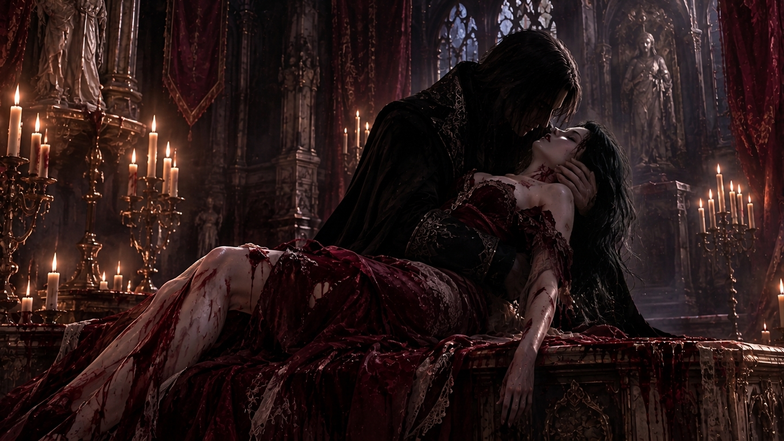

Frammenti dal diario di Lyria
Pagina ritrovata
L.


La dimora degli ultimi ricordi
Cinque soglie. Cinque frammenti. Nessun ricordo è innocente.

Primo frammento

Secondo frammento

Terzo frammento
Quarto frammento

Quinto frammento

Ciò che resta dopo la fine